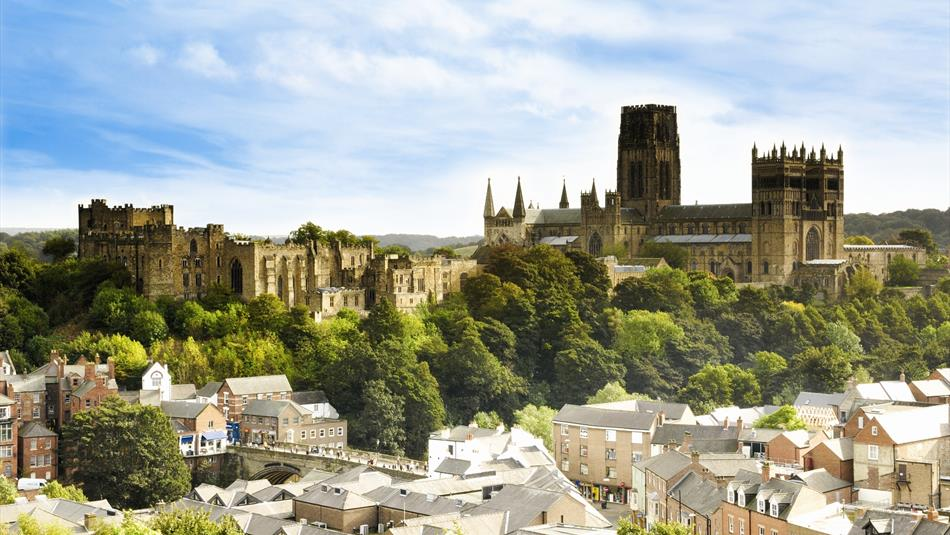
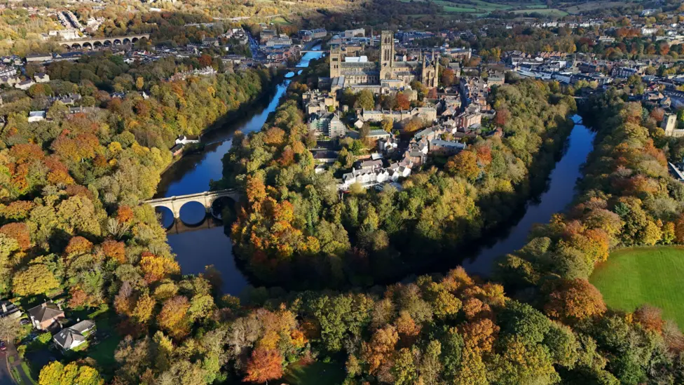

Travel
How to get to the venue.
By train: Durham Station is the closest stop, with regular services from London, Edinburgh, Newcastle and beyond. Taxis available outside the station or short walk into town centre (≈ 10 minutes).
Trainline: book and manage train journeys here.
By air: Newcastle and Durham Tees Valley are the nearest airports. From there, a short ride via train or taxi will bring you into Durham.
It is however entirely manageable to fly into London and take the train up (≈ 3 hours), or into Edinburgh and take the train down (≈ 2 hours), and see the lovely British countryside go past in the windows.
By car: Durham is just off the A1 motorway. Please check local parking options ahead of time, we have provided parking recommendations in the FAQ.


Where to stay
Some recommended options.
We have Castle accommodation is reserved for the night before and the night of wedding, bookable via codes.
- These codes will be distributed first to international guests and then on a first-come first-served basis.
- There are 34 available ensuite rooms (11 singles, 11 double, 12 twin), and more rooms available with shared bathroom facilities.
- On the RSVP form, please request if you would like to stay on site and we'll distribute the codes as soon as possible.
Please note, there are no elevators/lifts in Castle and all bedrooms are accessed via staircases. Some rooms involve climbing up to 160 steps - part of the charm of a 900+ year old Castle!
Hotels & B&Bs in central Durham (short walk / taxi to the castle):
- Delta Hotel Marriott: A great option for anyone, especially those with Marriot points (e.g. Bill Casey).
- Hotel Indigo: A good hotel option, slightly more expensive than the Marriott, newly renovated rooms.
- Radisson Blu: 5 minutes walk further out than the other options, it has more facilities than the other options here (pool etc).
- Premier Inn: Reliable budget option.
Airbnbs / apartments may be a good option if you are coming as a group or staying longer.
Local B&Bs in central Durham can be booked directly or through Booking.com.
We recommend booking early – Durham is small and popular.